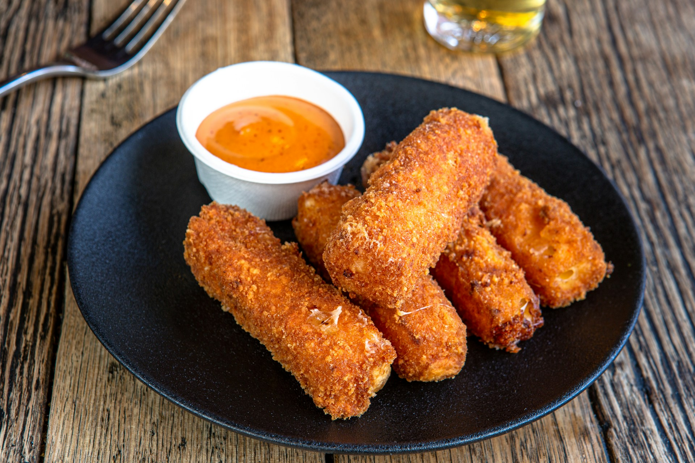
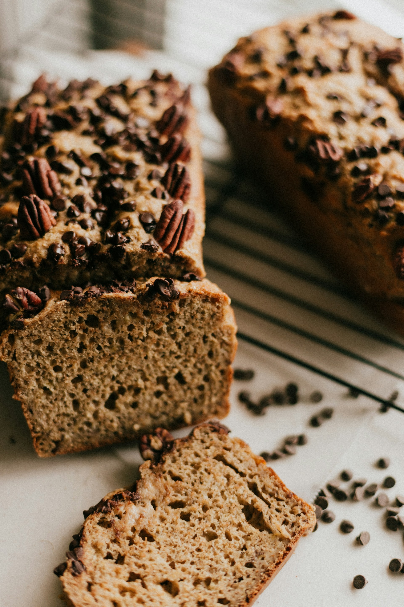
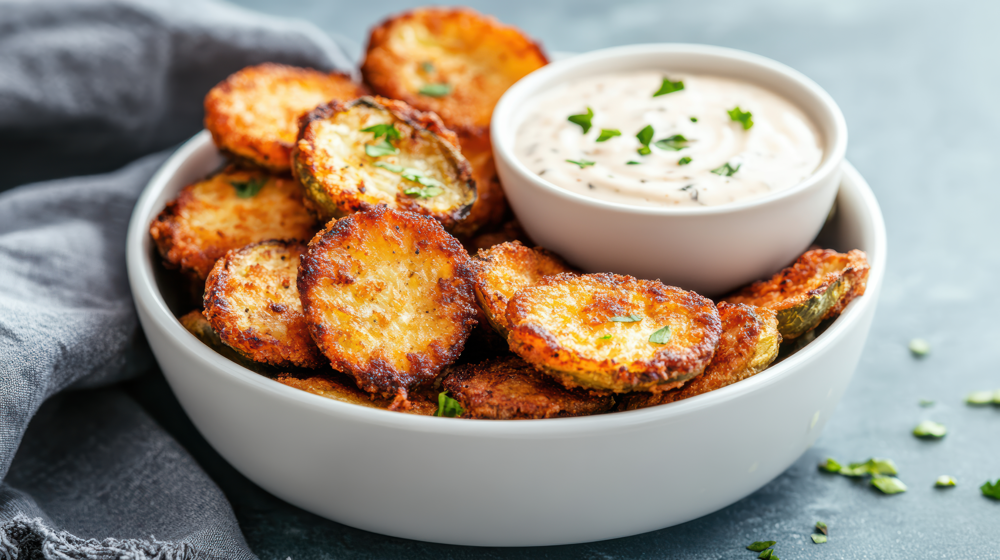
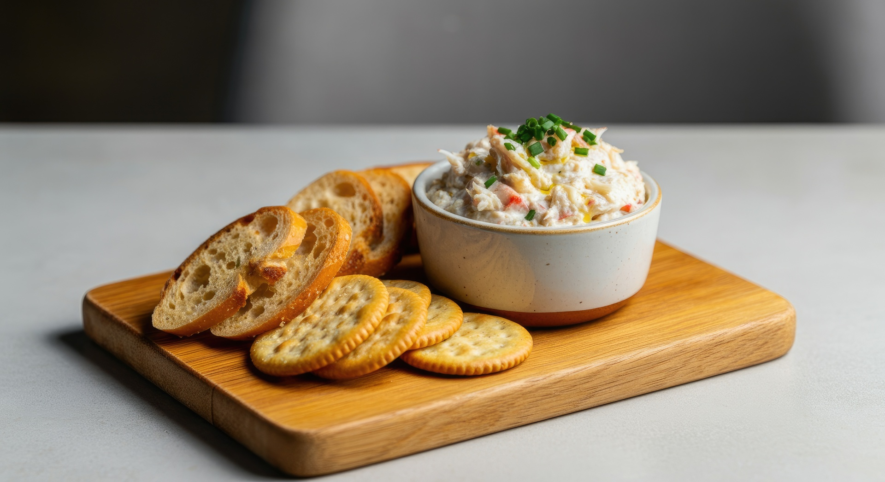

Home
Appetizers
Entrées
Desserts
Easy Delicious Appetizers
Mozzarella Sticks
Banana Bread
Fried zucchini
Crab Dip
Mozzarella Sticks

Photo by Snappr on Unsplash
Author: Anonymous
Total Time: 1 Hour 30 minutes
Ingridients
- 2 cups of bread crumbs.
- 1 tsp Italian seasoning.
- 1 tsp dried parsley.
- 1/2 tsp garlic powder.
- 1 tsp black pepper.
- 1/2 tsp salt.
- 2 large eggs.
- 1/2 cup of flour.
- 15-20 mozzarella sticks or 1lb mozzarella block.
- Vegetable oil to fry.
- Marinara Sauce to dip.
Instructions
-
In a bowl add in your bread crumbs, italian seasoning, parsley,
garlic powder, pepper, & salt. Mix together until combined then
set aside.
-
In another bowl add in your flour and your seasonings, combine
then set aside.
-
Get a another bowl and crack in your eggs and mix together.
-
Once you have your dry and wet ingredients combined set up your
line as, Mozzarella sticks, flour, eggs, then bread crumb.
-
Dip your mozzarella stick into the flour, tap any excess, then
into the eggs, let excess drip off, finally roll into the bread
crumbs. After set onto tray or plate.
-
After you have your mozzarella ssticks fully coated place into
the freezer for 30 minutes to an hour.
-
Once your mozzarella sticks have had time to freeze, pour a
shallow amount of oil into a deep pan and heat it to 350°F and
then add 2-4 mozzarella sticks (depends how big you pot/pan is)
fry for about 1 minute until golden brown. Remove onto a wire
rack or plate with a paper towel to cool.
-
Once all are finished enjoy with some warm Marinara sauce.
Serve and Enjoy!
Top of Page
Mozzarella Sticks
Banana Bread
Fried zucchini
Crab Dip
Banana Bread.

Photo by Priscilla Du Preez 🇨🇦 on Unsplash
Author: Anonymous
Total Time: 1 Hour 15 Minutes
Ingridients
- 2 cups all purpose flour.
- 1 1/2 cups of mashed bananas.
- 1 cup of sugar.
- 1/2 vegetable oil.
- 1 1/2 tsp baking powder.
- 1/2 tsp baking soda.
- 1/4 tsp salt.
- 1/4 tsp ground cinnamon.
- 1/8 ground nutmeg.
- 2 large beaten eggs.
Instructions
-
Combine flour, baking powder, baking soda, salt, cinnamon, &
nutmeg in a medium bowl.
-
Combine eggs, banana, sugar, & oil in a small bowl.
-
Add wet ingredients to dry ingredients and mix until moist. Do
not over mix.
-
Preheat oven to 350°F and grease a 9x5x3 loaf pan and pour
mixture into pan. Bake for 55 minutes or until toothpick comes
out clean.
-
Cool in pan for 10-20 minutes then transfer out of the pan onto
a wire rack to finish cooling.
Serve and Enjoy!
Top of Page
Mozzarella Sticks
Banana Bread
Fried zucchini
Crab Dip
Fried zucchini.

Dish Stock photos by Vecteezy
Author: Anonymous
Total Time: 50 Minutes
Ingridients
- 1 cup of all purpose flour.
- 2-3 medium zucchinis.
- 1 tsp salt.
- 1/2 tsp black pepper.
- 1/2 tsp onion powder.
- 1/2 tsp garlic powder.
- 1/2 tsp dried parsley.
- 3 large eggs.
- 1 1/2 cup bread crumbs.
- 3/4 grated parmesan cheese (optional).
- neutral oil for frying.
Instructions
-
Cut your zucchinis into rounds to your preferred thickness.
(thin slices are recommended).
-
In a shallow dish combine flour, salt, garlic powder, onion
powder, & pepper.
-
In another shallow dish beat eggs together
-
in another shallow dish combine bread crumbs, salt, garlic
powder, onion powder, & pepper.
-
Once everything is combined in their dishes make sure they are
lined up as ordered. Dip zucchini in flour, tap off excess, dip
in egg, let excessfrip off, then dip in bread crumbs. once
coated place on a pan or plate and let chill in the fridge for
15-30 minutes.
-
While the zucchini chills pour your oil into a pot/pan. heat the
oil to 350°F. Fry 3-5 zucchinis for 2-3 minutes per side or
until golden brown.
-
Place finished zucchini onto a wire rack or plate with paper
towels to cool.
Serve and Enjoy!
Top of Page
Mozzarella Sticks
Banana Bread
Fried zucchini
Crab Dip
Crab Dip.

Crab Dip Stock photos by Vecteezy
Author: Anonymous
Total Time: 20 minutes
Ingridients
- 1lb Fresh crab meat cooked or imitation crab.
- 8oz of softened cream cheese.
- 2 tbsp minced garlic or 1 tbsp of garlic powder.
- 1/2 tbsp onion powder.
- 1 1/2 tsp old bay.
- 1/4 tsp salt.
- 1 tsp worcestershire sauce.
- 1/2 of a lemon juiced
- 1/2 cup of cheddare cheese (optional).
- 1/4 cup chopped green onions (optional).
- 1/2 tsp of hot sauce (optional).
Instructions
-
Beat softened cream cheese, mayonnaise, and sour cream until
combined.
-
Add in garlic, onion powder, old bay, salt, worcestershire,
lemon juice, hot sauce, cheese, and green onion and finally the
crab meat.
-
Transfer into an oven safe dish and bake at 350°F for 10-15
minutes to melt the cheese. Serve hot or cold with your favorite
dipper.
Serve and Enjoy!
Top of Page
Mozzarella Sticks
Banana Bread
Fried zucchini
Crab Dip